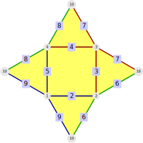
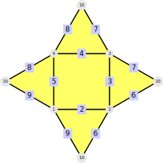
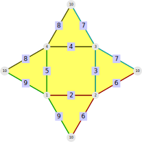
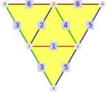
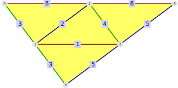
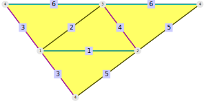
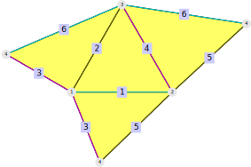

This chapter is concerned with edge-coloured (twisted) polygonal complexes and in particular simplicial surfaces. The first section (18.1) deals with the definition of arbitrary edge-colourings and the methods to access its colouring.
The second section (18.2) explains how the drawing functionality for polygonal surfaces without edge ramifications (compare section 16.2 for details) is extended for edge-coloured ramified polygonal surfaces.
Finally section 18.3 deals with the isomorphism problem of edge-coloured polygonal complexes.
This section describes how an edge-colouring is implemented in the SimplicialSurfaces-package.
An EdgeColouredTwistedPolygonalComplex (18.1-2) consists of:
a twisted polygonal complex, accessible by TwistedPolygonalComplex (18.1-3)
an edge colouring, which can be accessed by ColoursOfEdges (18.1-4) and EdgesOfColours (18.1-5)
Specialisations like EdgeColouredPolygonalComplex and EdgeColouredSimplicialSurface exist as well and behave in the expected way.
As an illustration we consider a pyramid with square base.
gap> pyr := PolygonalSurfaceByDownwardIncidence( > [ , [1,2], [2,3], [3,4], [1,4], [2,10], [3,10], [4,10], [1,10] ], > [ [2,3,4,5], , [2,6,9], [3,6,7], [4,7,8], [5,8,9] ] );;
We would like to colour the edges in the following way:

To do that we describe the colours by positive integers (for example 1,2,4). We can encode the edge colouring in two ways:
We can give a list that encodes which edge has which colour.
gap> colOfEdges := [,2,1,1,2,4,1,4,2]; [ , 2, 1, 1, 2, 4, 1, 4, 2 ]
The entry at position edge denotes the colour of edge.
We can give a edge colour class for each colour (as list).
gap> colClasses := [ [ 3, 4, 7 ], [ 2, 5, 9 ],, [ 6, 8 ] ]; [ [ 3, 4, 7 ], [ 2, 5, 9 ],, [ 6, 8 ] ]
Both of those can be used to construct the edge coloured polygonal complex:
gap> colPyr := EdgeColouredPolygonalComplex( pyr, colOfEdges );; gap> colPyrAlt := EdgeColouredPolygonalComplex( pyr, colClasses );; gap> colPyr = colPyrAlt; true
Both the polygonal surface and the colouring can be accessed.
gap> PolygonalComplex(colPyr) = pyr; true gap> ColoursOfEdges(colPyr) = colOfEdges; true gap> EdgesOfColours(colPyr) = colClasses; true
A quick access to the used colours is also available:
gap> Colours(colPyr); [ 1, 2, 4 ]
‣ IsEdgeColouredTwistedPolygonalComplex( object ) | ( filter ) |
‣ IsEdgeColouredPolygonalComplex( object ) | ( property ) |
‣ IsEdgeColouredSimplicialSurface( colComplex ) | ( property ) |
Returns: true or false
Check if a given object is an IsEdgeColouredTwistedPolygonalComplex. This is the case if it consists of a twisted polygonal complex and an edge colouring, accessible by TwistedPolygonalComplex (18.1-3) and ColoursOfEdges (18.1-4) respectively.
In addition there are some properties of the type IsEdgeColouredThing which check if the underlying twisted polygonal complex fulfills Thing. For example IsEdgeColouredSimplicialSurface checks if the underlying polygonal complex is a simplicial surface.
‣ EdgeColouredTwistedPolygonalComplex( complex, colouring ) | ( operation ) |
‣ EdgeColouredTwistedPolygonalComplexNC( complex, colouring ) | ( operation ) |
‣ EdgeColouredPolygonalComplex( complex, colouring ) | ( operation ) |
‣ EdgeColouredPolygonalComplexNC( complex, colouring ) | ( operation ) |
‣ EdgeColouredSimplicialSurface( surface, colouring ) | ( operation ) |
‣ EdgeColouredSimplicialSurfaceNC( surface, colouring ) | ( operation ) |
Returns: an EdgeColouredTwistedPolygonalComplex
Construct an edge coloured (twisted) polygonal complex. The edge colouring can be given in one of two ways:
As a list colouring of positive integers. For every edge edge in the given complex the entry colouring[edge] contains the colour of edge (we encode colours by positive integers).
As a list colouring of sets of positive integers. For every colour col (the colours are described by positive integers) the entry colouring[col] contains the set of all edges with colour col.
The more specific variations enforce their more restrictive type on complex, e.g. EdgeColouredSimplicialSurface requires complex to be a simplicial surface.
Note: If the given complex is already edge coloured, it will be stripped of this colouring first.
As illustration we colour the pyramid from the start of section 18.1 in two different ways and use both ways of encoding the colouring.
gap> pyr := PolygonalSurfaceByDownwardIncidence( > [ , [1,2], [2,3], [3,4], [1,4], [2,10], [3,10], [4,10], [1,10] ], > [ [2,3,4,5], , [2,6,9], [3,6,7], [4,7,8], [5,8,9] ] );;

We use the first method of encoding the colouring (based on the edges):
gap> colPyr1 := EdgeColouredPolygonalComplex(pyr, [,2,1,1,2,3,1,3,2]);;
We can also pick a different colouring which we will define by the second method of encoding:
gap> colPyr2 := EdgeColouredPolygonalComplex(pyr, [[2,6],[3,7],,[4,8],[5,9]]);;

The NC-version does not check whether the given colouring is consistent with the edges of complex, i.e.
Does every edge of complex appear?
Is every purported edge of colouring an edge of complex?
‣ TwistedPolygonalComplex( colComplex ) | ( attribute ) |
‣ PolygonalComplex( colComplex ) | ( attribute ) |
‣ SimplicialSurface( colComplex ) | ( attribute ) |
Returns: a twisted polygonal complex
Return the underlying twisted polygonal complex of an edge coloured twisted polygonal complex. The other variants return the same object but will guarantee the more specific type.
For example both edge coloured pyramids from 18.1-2 have the same underlying polygonal complex.
gap> PolygonalComplex(colPyr1) = PolygonalComplex(colPyr2); true
‣ ColoursOfEdges( colComplex ) | ( attribute ) |
‣ ColourOfEdge( colComplex, edge ) | ( operation ) |
‣ ColourOfEdgeNC( colComplex, edge ) | ( operation ) |
Returns: a list of positive integers / a positive integer
The method ColourOfEdge(colComplex, edge) returns the colour of edge, represented by a positive integer. The NC-version does not check whether the given edge is an edge of the underlying twisted polygonal complex.
The attribute ColoursOfEdges(colComplex) collects all of those colours in a list that is indexed by the edge labels, i.e. ColoursOfEdges(colComplex)[edge] = ColourOfEdge(colComplex, edge). All other positions of this list are not bound.
For example consider the coloured pyramid from the start of section 18.1.
gap> ColourOfEdge( colPyr, 2 ); 2 gap> ColourOfEdge( colPyr, 7); 1 gap> ColoursOfEdges( colPyr ); [ , 2, 1, 1, 2, 4, 1, 4, 2 ]
‣ EdgesOfColours( colComplex ) | ( attribute ) |
‣ EdgesOfColour( colComplex, colour ) | ( operation ) |
Returns: a list of sets of positive integers / a set of positive integers
The method EdgesOfColour(colComplex, colour) returns the set of all edges with colour colour. If a colour is not used in the given edge coloured twisted polygonal complex, the empty set is returned.
The attribute EdgesOfColours(colComplex) collects all of these sets in a list that is indexed by the colours (given as positive integers), i.e. EdgesOfColours(colComplex)[colour] = EdgesOfColour(colComplex, colour). All other positions of this list are not bound.
For example consider the coloured pyramid from the start of section 18.1.
gap> EdgesOfColour( colPyr, 1 ); [ 3, 4, 7 ] gap> EdgesOfColour( colPyr, 4); [ 6, 8 ] gap> EdgesOfColour( colPyr, 5 ); [] gap> EdgesOfColours( colPyr ); [ [ 3, 4, 7 ], [ 2, 5, 9 ],, [ 6, 8 ] ]
‣ Colours( colComplex ) | ( attribute ) |
Returns: a set of positive integers
Return the set of all edge colours that are used in the given edge coloured twisted polygonal complex.
The drawing functionality for ramified polygonal surfaces in section 16.2 can also be used for edge coloured polygonal complexes (as long as the underlying polygonal complex is a ramified polygonal surface).
The main difference to the previous method is that it is much more convenient to change edge lengths and colours. Consider for example a coloured tetrahedron.
gap> tetra := Tetrahedron();; gap> colTetra := EdgeColouredPolygonalComplex(tetra, [1,2,3,3,2,1]);; gap> pr := DrawSurfaceToTikz( colTetra, "ColouredTetrahedron", rec(scale:=2.5) );;

If we now want to change edge lengths (such that edges of the same colour have the same length), we can do this very easily:
gap> pr.edgeColourClassLengths := [5,4,3];; gap> pr.scale := 1;; gap> DrawSurfaceToTikz( colTetra, "ColouredTetrahedron_rectangular", pr );;

The colours can also be changed in the same fashion.
gap> pr.edgeColourClassColours := ["cyan","olive","magenta"]; gap> DrawSurfaceToTikz( colTetra, "ColouredTetrahedron_coloured", pr );

While it is very easy to modify all edges of the same colour simultaneously, it becomes harder to change them individually. For example we can't just make the first and fourth edge longer.
gap> pr.edgeLengths; [ 5, 4, 3, 3, 4, 5 ] gap> pr.edgeLengths := [4,4,3,4,4,5];; gap> DrawSurfaceToTikz( colTetra, "ColouredTetrahedron_modLengths", pr ); gap> pr.edgeLengths; [ 5, 4, 3, 3, 4, 5 ]
To change individual edges the colour connection has to be ignored. This is possible by using the entry edgeColourClassActive.
gap> pr.edgeColourClassActive := false;; gap> pr.edgeLengths := [4,4,3,4,4,5];; gap> DrawSurfaceToTikz( colTetra, "ColouredTetrahedron_modLengths", pr );

‣ DrawSurfaceToTikz( colRamSurf, fileName[, printRecord] ) | ( operation ) |
Returns: a record
Draw the net of the given colRamSurf into a tex-file (using TikZ). This method extends the drawing method for polygonal surfaces without edge ramifications (compare 16.2-1) by respecting the edge colour classes of colRamSurf. An introduction the the usage of the additional parameters can be found at the start of section 18.2.
If the given fileName does not end in .tex the ending .tex will be added to it.
The given file will be overwritten without asking if it already exists. If you don't have permission to write in that file, this method will throw an error.
The particulars of the drawing are determined by the given printRecord. If this is not given, the default settings are used.
The printRecord will be modified and returned by this method. It contains the data to recreate the drawing of the surface.
There are several parameters to change the output of this method, from cosmetic changes to exactly controlling in which order the faces are drawn. For the standard parameters, see 16.2-1. For edge coloured ramified polygonal surfaces the edgeColourClass-parameters are added:
edgeColourClassActive: If this parameter is false the other edgeColourClass-parameters have no effect. By default, it is true.
edgeColourClassLengths: This parameter is a list with an entry for every colour of colRamSurf. The entry of a colour defines the length of all edges with this colour. This parameter overwrites edgeLengths as long as edgeColourClassActive is true.
edgeColourClassColours: This parameter is a list with an entry for every colour of colRamSurf. The entry of a colour defines the drawing colour for all edges of this colour class. This parameter overwrites edgeColours as long as edgeColourClassActive is true.
An edge-coloured polygonal complex can be completely described by the incidence structure of its polygonal complex and the edge colouring. These can be encoded in an extended incidence graph. To do so, we start with the incidence graph from section 15.2 and add a vertex for each colour, which is connected to all edges of this colour.
Then the isomorphism problem can be decided if one of the following graph packages is loaded: Digraphs, GRAPE and NautyTracesInterface.
‣ ColourIncidenceDigraphsGraph( colComplex ) | ( attribute ) |
‣ ColourIncidenceGrapeGraph( colComplex ) | ( attribute ) |
‣ ColourIncidenceNautyGraph( colComplex ) | ( attribute ) |
Returns: a graph as defined in the package Digraphs
Return the colour-extended incidence graph (a coloured, undirected graph) of the given edge coloured polygonal complex. It is defined as follows:
The vertices are the vertices (colour 0), edges (colour 1), faces (colour 2) and colours (colour 4) of colComplex. The labels are shifted in the following way:
The vertex numbers are not modified
The edge numbers are shifted upwards by the maximal vertex number
The face numbers are shifted upwards by the sum of the maximal vertex number and the maximal edge number
The colour labels are shifted upwards by the sum of the maximal vertex label, the maximal edge label and the maximal face label.
The edges can be one of these:
Vertex-edge-pairs or edge-face-pairs such that the elements of the pair are incident in the polygonal complex of colComplex
edge-colour-pairs such that the edge has the corresponding colour in colComplex.
The returned graph can be given in three different formats, corresponding to different graph packages: Digraphs, GRAPE and NautyTracesInterface.
As an example consider the coloured Tetrahedron:
gap> colTetra := EdgeColouredPolygonalComplex(Tetrahedron(), [1,2,3,3,2,1]);;
For example edge 1 is incident to the vertices 1 and 2, incident to the faces 1 and 2 and has colour 1. Edge 1 has the label 5 in the incidence graph. This means that edge 5 must be adjacent to the vertices 1, 2, 11, 12 and 15 in the incidence graph:
gap> digraph:=ColourIncidenceDigraphsGraph(colTetra);; gap> InNeighboursOfVertex(digraph,5); [ 1, 2, 11, 12, 15 ]
‣ IsIsomorphicEdgeColouredPolygonalComplex( colComplex1, colComplex2 ) | ( operation ) |
Returns: true or false
Return whether the given edge coloured polygonal complexes are isomorphic. They are isomorphic if their colour-extended incidence graphs (compare 18.3-1) are isomorphic. Changes of the colour labels are explicitly allowed.
For example the two colourings from 18.1-2 are not isomorphic.
gap> IsIsomorphicEdgeColouredPolygonalComplex(colPyr1, colPyr2); false
‣ EdgeColouredPolygonalComplexIsomorphismRepresentatives( complexList ) | ( operation ) |
Returns: a list of edge coloured polygonal complexes
The method EdgeColouredPolygonalComplexIsomorphismRepresentatives takes a list of edge coloured polygonal complexes and returns a reduced list in which no two entries are isomorphic.
For example, consider two isomorphic edge-coloured tetrahedra:
gap> colTetra1 := EdgeColouredPolygonalComplex(Tetrahedron(), [1,2,3,3,2,1]); tame coloured surface (RRR with 4 vertices, 6 edges and 4 faces) gap> colTetra2 := EdgeColouredPolygonalComplex(Tetrahedron(), [3,1,2,2,1,3]); tame coloured surface (RRR with 4 vertices, 6 edges and 4 faces) gap> IsIsomorphicEdgeColouredPolygonalComplex(colTetra1,colTetra2); true gap> Length( > EdgeColouredPolygonalComplexIsomorphismRepresentatives([colTetra1,colTetra2])); 1
generated by GAPDoc2HTML